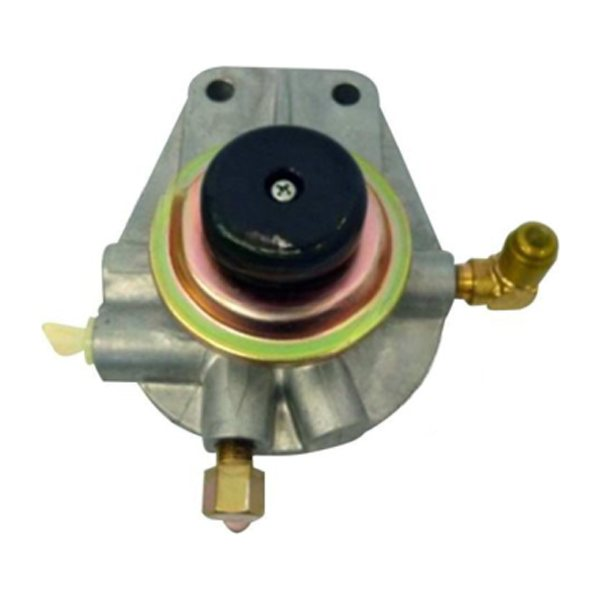

Parts › Fuel, LPG & Exhaust › 3112-301

Available
Email for a quote
Nissan 3112-301 Fuel Cap
| OEM part number | 3112-301 |
| Fits | Nissan |
| Models / notes | FO3 (TD42) |
| Category | Fuel, LPG & Exhaust |
| Type | Aftermarket replacement |
Send us the quantity you need and we'll reply with pricing, usually within 24 hours. Not the exact part? We can source it. Send the part number or a photo.